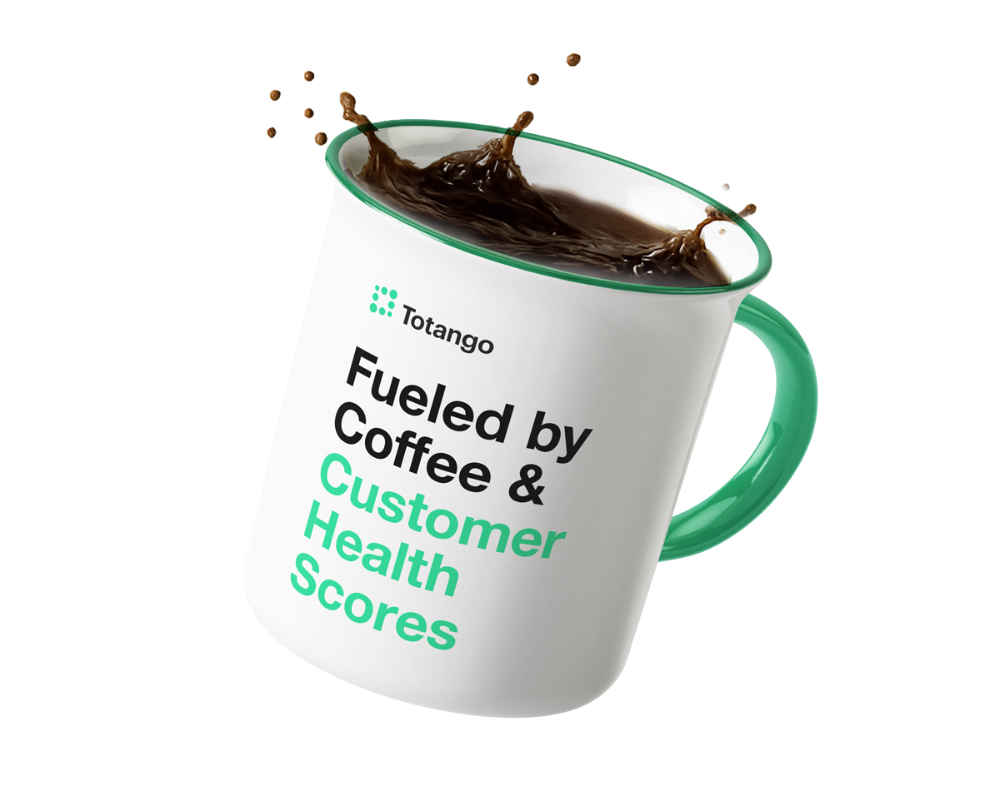
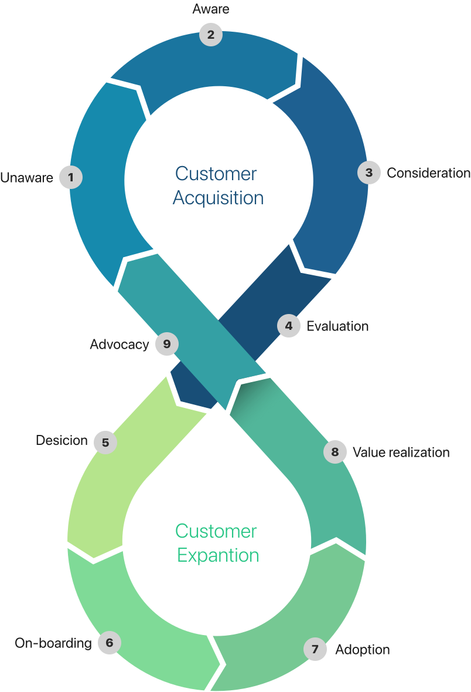
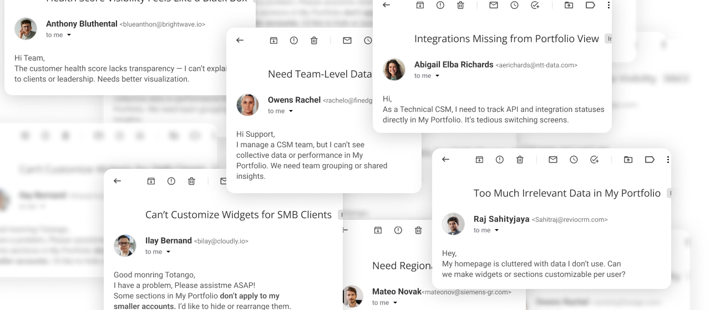
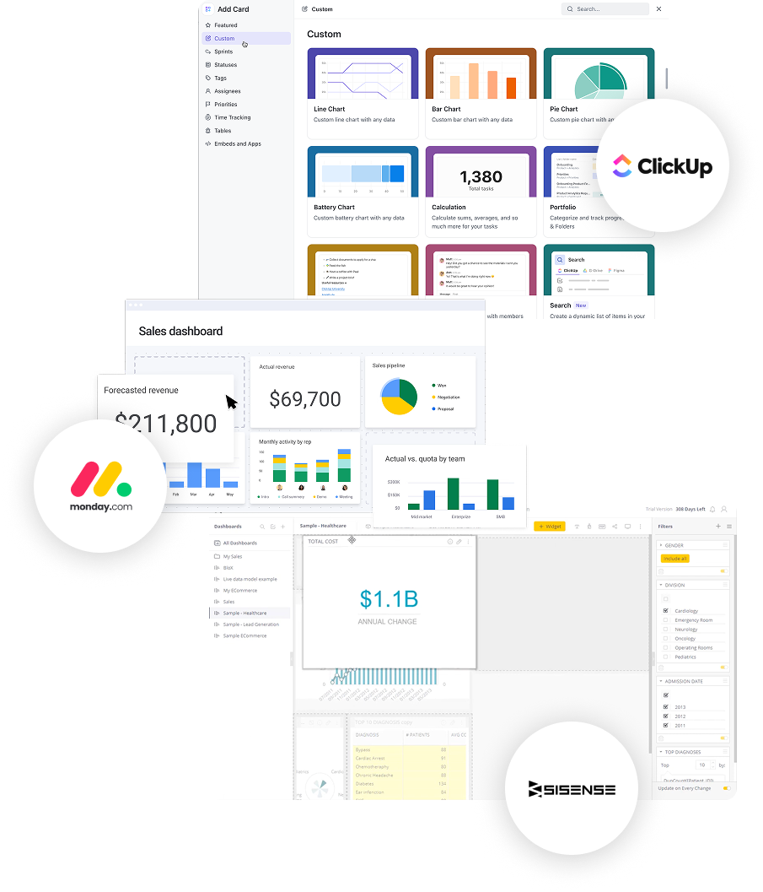
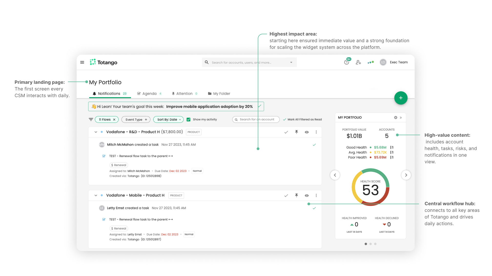
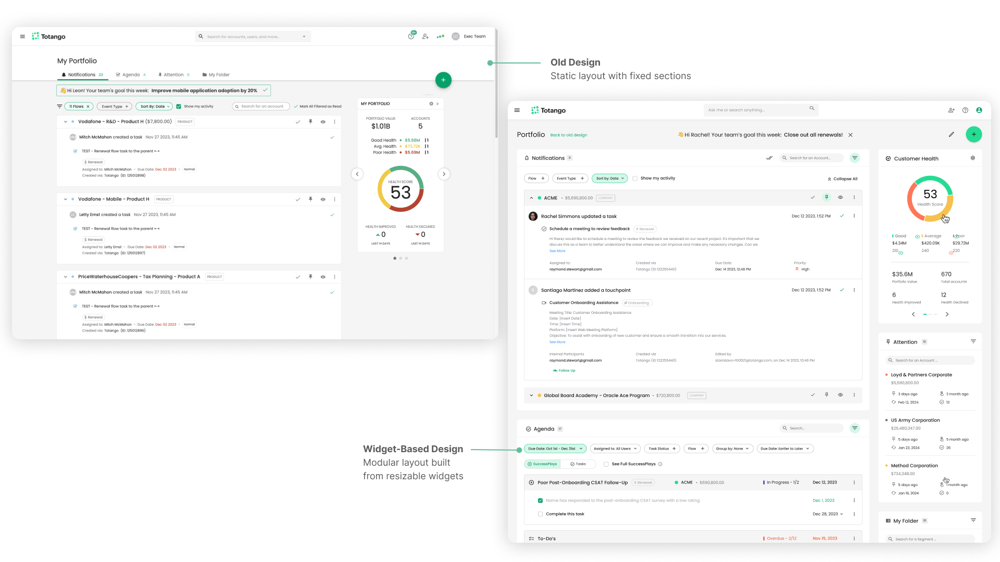
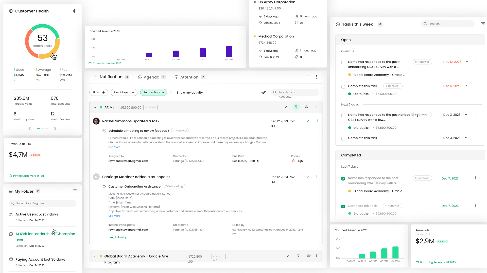
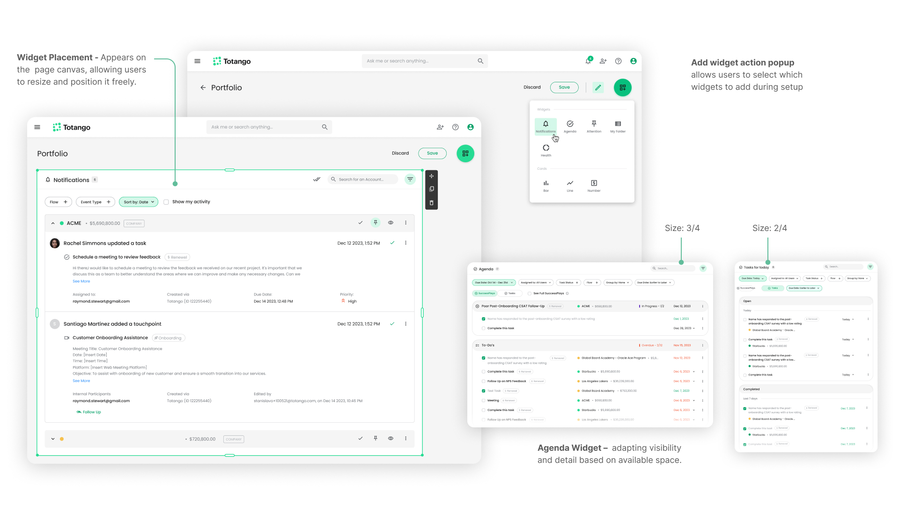
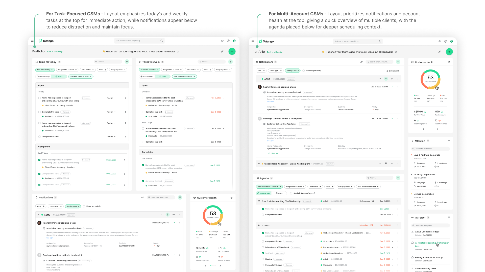

Case Study 02
Transforming a one-size-fits-all Customer Success dashboard into a modular, widget-based system adapted for every CSM role — reducing support tickets by 85% and cutting adoption time in half.
Totango is a SaaS platform that empowers CSM teams and managers to design and build customer success journeys — from onboarding to renewal — so they can measure performance, scale operations, and proactively prevent churn before customers disengage. It's a self-service platform that makes customer success approachable and effective for businesses of any size or industry.


Customer Success goes beyond support — it ensures the customer journey delivers measurable value.
Retention and growth depend on guiding customers through successful journeys, not just transactions.
It transforms organizations from reactive support to proactive, journey-based engagement.
CSMs use data and automation to monitor health, optimize journeys, and trigger timely actions.
When customer journeys succeed — users renew, expand, and become advocates.
Platforms like Totango make these journeys scalable, measurable, and personalized across every account.
* Example of a Customer Journey — each business adapts its own flow based on customer type, goals, and lifecycle stage.
Unify the platform for all CSM roles with a modernized, smoother user experience and consistent onboarding and adoption flow — reducing support load and feature requests while increasing CSAT and customer advocacy.
As Lead Designer, I partnered with PMs to modernize the design system, improve usability across CSM roles, and design a streamlined experience based on user research — all within limited engineering resources.
Problem statement 01
Adoption Drift
Letting users set their own homepage (a quick fix to reduce churn) created inconsistent entry points. Many skip the intended "My Portfolio" flow, using the platform differently than designed. This leads to confusion, lower adoption, and more support tickets and off-track feature requests.
What is the problem?
Broken user flows
Who is effected?
CSMs, Engineers, New users
Why it's a problem:
Adoption friction, feature misuse, high support volume, engineering overload
Problem statement 02
Fragmented Needs, Unscalable Demand
CSMs work in diverse contexts — from enterprise teams handling one account to SMB CSMs managing regions and overlapping roles. The current experience isn't adaptable, leading to ongoing feature requests, rising support load, and pressure for tailored solutions.
What is the problem?
Product Scalability, Rising Support Volume, Churn Risk
Who is effected?
Enterprise CSMs, Regional / SMB CSMs, Cross-functional roles
Why it's a problem:
Churn risk, inconsistent workflows, high support load, and adoption friction

Qualitative Research 1
Mapped how different CSM roles operate across industries and company sizes.
Conducted interviews, workflow observations, and usage analysis.
Identified key patterns and pain points driving the redesign direction.
Qualitative Research 2
| Full Name | Title / Role | Company | Size | Scope | User Quote | Key Insights |
|---|---|---|---|---|---|---|
| Sofia Markovic | Enterprise CSM Lead | SAP | Enterprise | Global | "I oversee one global client with multiple teams, yet my homepage shows data for everyone. It's cluttered and not aligned with how I actually work." | Needs single-account focus; current view adds noise and reduces relevance. |
| Arjun Mehta | Mid-Market CSM | Revio CRM | Mid-Market | Regional | "I manage over 40 client accounts, each at a different stage. I need quick visibility into risks and progress, not a generic overview." | Needs scalable visibility and prioritization; current layout doesn't scale for high-volume account management. |
| Kenji Park | SMB CSM | Cloudly Analytics | SMB | Local | "Each client uses the product differently, but I see the same dashboard for all — it's not actionable." | Needs customizable views; current setup feels too generic. |
| Ben Gurevich | Regional CSM Manager | Siemens Digital Industries | Enterprise | Regional | "I oversee accounts across several countries and waste time filtering irrelevant regions." | Needs regional segmentation; current interface slows performance tracking. |
| Lukas van Dijk | CS Operations Manager | FinEdge Solutions | Mid-Market | Managerial | "I support a team of CSMs, but I can't compare performance or identify adoption gaps quickly." | Needs aggregated team-level insights; current tools lack management visibility. |
Competitive Benchmarking
I analyzed how other leading SaaS platforms handle role-based and customizable dashboards. The goal was to understand how different systems let users tailor their workspace to their specific roles, priorities, and data needs — without overcomplicating the experience.
Here's what I found:
Short onboarding or role query auto-generates a tailored dashboard aligned with user goals.
Users can add, remove, or resize widgets (KPIs, analytics, lists) to fit their workflow and focus areas.
Dashboards evolve through ongoing testing and data-driven adjustments, even using pre-signup intent data to refine relevance.

Scope Definition
Old "My Portfolio" page — a one-size-fits-all layout with static agenda, notifications, and tasks, offering no flexibility to fit different CSM needs.
Primary landing page: The first screen every CSM interacts with daily.
High-value content: includes account health, tasks, risks, and notifications in one view.
Central workflow hub: connects to all key areas of Totango and drives daily actions.
Highest impact area: starting here ensured immediate value and a strong foundation for scaling the widget system across the platform.

Step 01
Based on the research insights, I aimed to create a modular dashboard built from resizable widgets — adaptable to every CSM role and workflow.
Transformed static "My Portfolio" into a dynamic, widget-based layout.
Defined core widgets by summarizing existing features and usage patterns.
Placing new widgets in the existing layout eased adaptation and reduced cognitive friction.

Step 02
Placed new widgets in the existing layout to maintain familiarity and ease transition.
Assessed each widget's data value and space efficiency to define practical sizes and keep each purposeful.
Established shared components for future use inside the Account Profile.

Step 03
Each widget was designed in multiple scalable formats, ensuring flexibility across screen real estate and user focus levels.
Created four widget scales — 4/4, 3/4, 1/2, 1/4.
Adjusted data visibility per scale using progressive disclosure (drill-in, dropdown, tooltip).
Maintained data consistency across all widget versions for smooth reuse.

Step 04
With the widget system in place, the final step was applying it to real role needs. Domain administrators can define default layouts per CSM role — so every user starts with a workspace already tailored to how they actually work, not a blank slate.

The same widgets were reused inside the Account Profile page, reducing engineering effort and implementation time.
−35%
Reduction in new-user adoption time
−85%
Fewer support tickets
~50%
Decrease in implementation time via widget reuse
4.6
CSAT score for the new "My Portfolio" experience